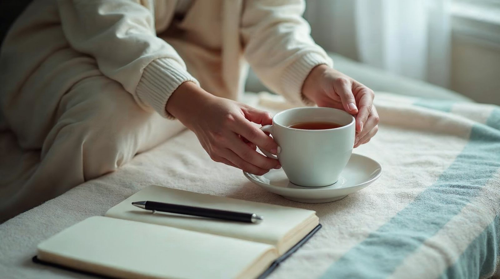
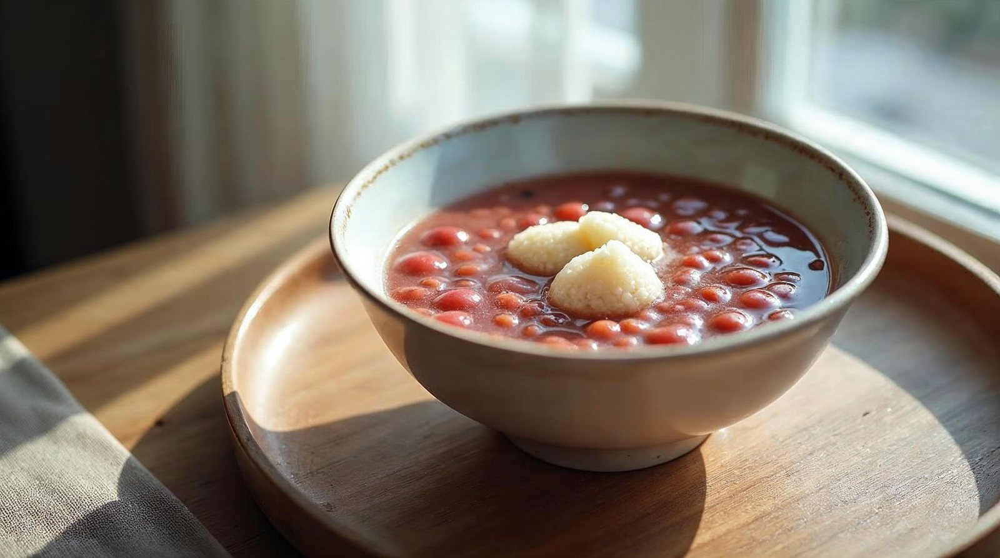
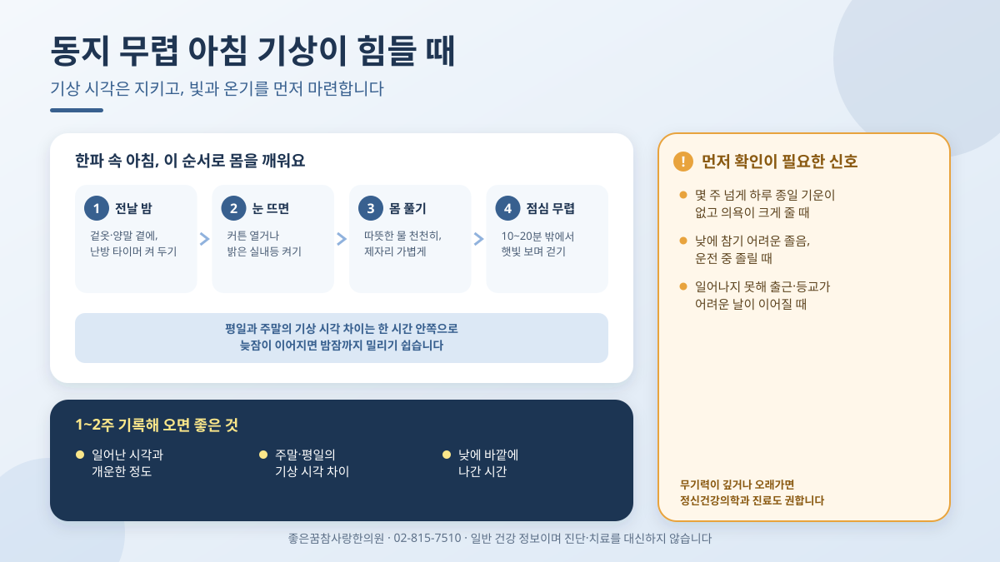

이종호 한의사 감수좋은꿈참사랑한의원 대표원장 (한의사 면허번호 19769)발행 2026-11-22 · 수정 2026-11-26
이 글의 차례
한겨울 아침에는 이불 밖이 춥고 바깥도 어두워 몸이 더 무겁게 느껴집니다. 해가 가장 짧은 동지 무렵은 몸의 리듬이 흔들리기 쉬운 때라 늦잠과 아침 무기력이 흔합니다. 늦게 일어나는 날이 이어지면 밤잠까지 밀리기 쉬워, 아침 환경부터 바꿔 보는 것이 좋습니다.
왜 이런 불편이 생길 수 있나요
- 아침 햇빛은 몸을 깨우는 신호인데, 겨울에는 해가 늦게 떠 이 신호가 약해집니다.
- 실내외 온도 차가 커서 이불 밖으로 나오는 것 자체가 부담이 됩니다.
- 추워서 바깥 활동이 줄면 낮에 몸을 쓰는 양이 줄고 밤잠도 얕아지기 쉽습니다.
- 주말에 늦잠으로 몰아 자면 월요일 아침이 더 힘들어지는 순환이 생깁니다.
- 일어나자마자 누운 채 휴대폰부터 보면 몸이 깨어나는 시간이 더 늦어지기도 합니다.
먼저 이렇게 여쭙니다
- 평소보다 일어나는 시각이 얼마나 늦어졌나요?
- 일어나도 한참 몸이 무겁고 졸린가요?
- 주말과 평일의 기상 시각 차이는 어느 정도인가요?
- 겨울 들어 아침 식사와 낮 활동량이 달라졌나요?

일상에서 먼저 해 볼 수 있는 것
- 평일과 주말의 기상 시각 차이를 한 시간 안쪽으로 두기
- 일어나자마자 커튼을 열거나 밝은 실내등 켜기
- 잠자리 옆에 겉옷과 양말을 두고, 타이머로 기상 전에 난방 켜 두기
- 따뜻한 물을 천천히 마시고 제자리에서 가볍게 몸 풀기
- 점심 무렵 10~20분이라도 밖에서 햇빛 보며 걷기

한의원에서 함께 살필 수 있는 경우
- 아침에 몸이 무겁고 개운하지 않은 경우 잠의 깊이와 근육의 긴장 상태를 함께 살핍니다.
- 손발이 차고 겨울만 되면 기운이 유난히 떨어진다면 몸의 온기와 하루 활동량을 봅니다.
- 아침을 거르고 오전 내내 멍하다면 식사 시간과 소화 상태부터 짚어 봅니다.
좋은꿈참사랑한의원에서는 겨울 들어 달라진 잠과 생활을 들은 뒤, 진맥을 기본으로 하고 필요하다고 판단될 때 설진을 더해 몸 상태를 살피고 침이나 한약 상담 등 방법은 상태에 맞춰 고릅니다. 귀가 전에는 아침 기상 습관과 기록할 항목을 함께 정합니다.
이렇게 기록해 오시면 상담이 쉬워집니다
- 1~2주 동안 일어난 시각과 개운한 정도
- 주말과 평일의 기상 시각 차이
- 낮에 바깥에 나간 시간
- 기운이 특히 없던 날과 그날의 잠
이런 증상은 먼저 확인이 필요합니다
- 몇 주 넘게 하루 종일 기운이 없고 의욕이 크게 줄어든 경우
- 낮에 참기 어려운 졸음이 있거나 운전 중 졸린 경우
- 스스로를 해칠 생각이 들면 ☎ 109로 바로 연락하세요.
이런 신호가 있으면 한의원보다 가까운 병원이나 응급실을 먼저 찾으세요.

여쭙는 것
- 평소보다 일어나는 시각이 얼마나 늦어졌나요?
- 일어나도 한참 몸이 무겁고 졸린가요?
- 주말과 평일의 기상 시각 차이는 어느 정도인가요?
생활에서 해 볼 것
- 평일과 주말의 기상 시각 차이를 한 시간 안쪽으로 두기
- 일어나자마자 커튼을 열거나 밝은 실내등 켜기
- 잠자리 옆에 겉옷과 양말을 두고, 타이머로 기상 전에 난방 켜 두기
한의원에서 함께 살필 것
- 아침에 몸이 무겁고 개운하지 않은 경우 잠의 깊이와 근육의 긴장 상태를 함께 살핍니다.
- 손발이 차고 겨울만 되면 기운이 유난히 떨어진다면 몸의 온기와 하루 활동량을 봅니다.
- 아침을 거르고 오전 내내 멍하다면 식사 시간과 소화 상태부터 짚어 봅니다.
먼저 확인이 필요한 신호
- 몇 주 넘게 하루 종일 기운이 없고 의욕이 크게 줄어든 경우
- 낮에 참기 어려운 졸음이 있거나 운전 중 졸린 경우
- 스스로를 해칠 생각이 들면 109로 바로 연락하세요.
한눈에 보는 표
| 구분 | 핵심 |
|---|---|
| 여쭙는 것 | 평소보다 일어나는 시각이 얼마나 늦어졌나요? 일어나도 한참 몸이 무겁고 졸린가요? |
| 생활에서 해 볼 것 | 평일과 주말의 기상 시각 차이를 한 시간 안쪽으로 두기 일어나자마자 커튼을 열거나 밝은 실내등 켜기 |
| 한의원에서 함께 살필 것 | 아침에 몸이 무겁고 개운하지 않은 경우 잠의 깊이와 근육의 긴장 상태를 함께 살핍니다. 손발이 차고 겨울만 되면 기운이 유난히 떨어진다면 몸의 온기와 하루 활동량을 봅니다. |
| 먼저 확인이 필요한 신호 | 몇 주 넘게 하루 종일 기운이 없고 의욕이 크게 줄어든 경우 낮에 참기 어려운 졸음이 있거나 운전 중 졸린 경우 |
자주 묻는 질문
추운 날에는 더 자도 괜찮은가요?
가끔은 괜찮지만 늦게 일어나는 날이 이어지면 밤잠이 밀릴 수 있어, 평소 기상 시각에서 크게 벗어나지 않도록 권합니다.
아침에 일어나 바로 운동해야 하나요?
격한 운동보다 빛을 보며 가볍게 몸을 푸는 정도로 충분합니다. 한파에 갑자기 무리하면 부담이 될 수 있습니다.
겨울마다 기분이 가라앉는 것도 상담할 수 있나요?
네. 잠과 기분, 식욕의 변화를 함께 여쭙고, 무기력이 깊거나 오래가면 정신건강의학과 진료도 함께 권합니다.
아침에 따뜻한 차를 마시면 도움이 되나요?
따뜻한 물이나 차를 천천히 마시면 몸을 깨우기 편하다는 분이 많습니다. 카페인이 든 차는 되도록 오전에 드시는 편이 밤잠에 부담이 덜합니다.
좋은꿈참사랑한의원은 재진 때 지난번 이야기부터 이어서 여쭙니다. 진료시간과 예약은 오시는 길에서 확인하세요.
어디서 상담받을 수 있나요?
좋은꿈참사랑한의원은 서울 동작구 만양로2길 2 신성빌딩 3층·5층(서울 동작구 상도동, 7호선 상도역 3번 출구 근처)에 있습니다. 한의사 3명(이종호 대표원장, 조영기 수석진료원장, 정원영 진료원장)이 진료합니다. 진료시간은 평일 09:30~20:00(점심 13:00~14:00), 토·일·공휴일 09:30~15:00이며, 방문 전 전화로 확인을 권합니다. 예약은 네이버 예약, 카카오톡 상담, 전화 02-815-7510로 받습니다.
이 글은 일반적인 건강 정보이며 개인의 진단이나 치료를 대신하지 않습니다. 증상이 있거나 복용 중인 약이 있다면 진료를 통해 확인하세요. 치료 효과는 개인마다 다를 수 있습니다.
작성 기준: 일반적으로 알려져 있는 건강 정보를 참고해 정리했습니다(대표원장 감수). 증상 기록은 1~2주 동안 하루 1회, 비슷한 시간에 적어 오시면 지난 상태와 비교하기 쉽습니다.